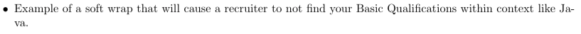

Project Overview
General résumé template with consistent formatting & general advice tailored for CS majors in FAANG+ & Fortune 500 companies in the US, Canada, and EU regions.
Disclaimer
I am a résumé writer, not a reviewer; I fix style and proofread (vocabulary and grammar mistakes), but I don't tell you how to tailor your résumé for a specific position or company. If I helped you, it would help me a lot if you recommended my résumé writing on LinkedIn.
I created this template & page to contain common advice & mistakes for people before requesting free feedback, and I will be adding to it consistently. It is a tremendous effort to repeat every piece of advice for the many people I help. So, please read it thoroughly before asking for feedback.
“No 'one size fits all'”. This template is unintended to be used 'as is' but as a layout. Layout varies from country to country and role to role. This principle also applies to all advice here, as not all the advice applies to everyone. You should consult a résumé writer for style and proofreading, or at least an English-native friend for proofreading.
General
Tips
“A résumé is a way to get to the next stage: the interview. Companies often get dozens of résumés for every opening … we get between 100 and 200 per opening. There is no possible way we can interview that many people. The only hope is if we can screen people out using résumés. Don't think of a résumé as a way to get a job: think of it as a way to give some hiring manager an excuse to hit DELETE. At least technically, your résumé has to be perfect to survive.”
—Joel Spolsky, Co-Founder of Stack Overflow
From style to proofreading… everything counts and can disqualify you. Your résumé might appear flawless in your eyes if you haven't seen enough résumés, just like chess. If you don't play chess, all you see is the pieces, not the pattern between them. Below sections will provide examples for such cases.
“Would I reject someone just because they don't quite understand the relationship between the comma and the space? Well, not necessarily. But when I have to find two summer interns out of 300 applicants, here's what I do with the résumés: I make three piles: Good, OK, and Bad. I give the same résumés to Michael and he does the same thing. There are always enough people that we both put in the Good pile that those are really the only people that stand a chance. In principle if we can't find enough people we like that we both rated as “good” we would consider some people who got Good/OK, but in practice this has never happened. Much as I'd love to be able to consider everyone on their merits instead of on superficial résumé stuff, it's just not realistic, and there's just no reason a college graduate can't get this right. ”
—Joel Spolsky, Co-Founder of Stack Overflow
Common Mistakes
- Never 100% depend on AI. It exaggerates and makes grammatical mistakes. Test it yourself and ask natives.
- If you can't find a résumé writer, have multiple people look at your résumé.
Style
An inconsistent or wrong style can disqualify your résumé. Consider a recruiter or hiring manager (HM) searching for your basic qualifications, such as "Java". He will press ctrl+f to search for it within context. Consider the following examples that will disqualify you:
- If your style softly wraps the word "Java", it won't appear in the search, and you will be disqualified even though you meet the requirements! 
- If you send your résumé in Word but you used awkward encoding for some reason, all text will appear as '?' until the recruiter figures out what encoding you used if he is that interested in you!
- If you used old Word or corrupted your style for some reason and the text in your PDF became unsearchable,
- If you sent your résumé in old Word format (.doc) or if the recruiter opens your new Word format (.docx) using old Word, the chances of bad styles increase significantly.
Common Mistakes
- Never 100% depend on AI. It exaggerates and makes grammatical mistakes. Test it yourself and ask natives.
- Your résumé might appear flawless in your eyes if you haven't seen enough résumés, just like chess. If you don't play chess, all you see is the pieces, not the pattern between them.
- If you can't find a résumé writer, have multiple people look at your résumé.